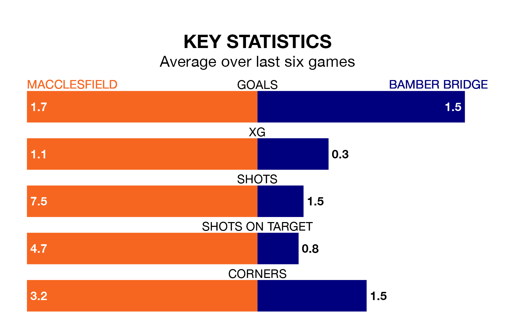

Macclesfield are heavy favourites to keep all three points at home in Saturday's kick-off against Bamber Bridge.
Macclesfield, who sit sixth in Northern Premier League with 27 games played, are priced at 1.4 to seal victory.
Sitting 10 places and 15 points behind them in the table, Bamber Bridge are 5.0 to win with *Betting Company*, while the draw is at 5.0.
With 55 goals in 27 games so far this season, Macclesfield are scoring more than average in the league with 2.0 goals per game. And they are conceding fewer than average, letting in 33 goals at a rate of 1.2 per game.
Bamber Bridge, meanwhile, are below average scorers, with 1.6 goals per game, compared to a league average of 1.7. They have conceded 1.9 goals per game.
The home team are in mixed form in Northern Premier League, with three wins and a draw from their last six games.
With two wins and a draw over that period, the visitors' form is worse – they have taken seven points from 18, compared to Macclesfield's 10.
Macclesfield's last match was on January 27, a 2-1 win against Guiseley.
Bamber Bridge lost 5-1 against Radcliffe Borough last time out, also on January 27.
Updated: 10:40 (UTC), 01/02/24